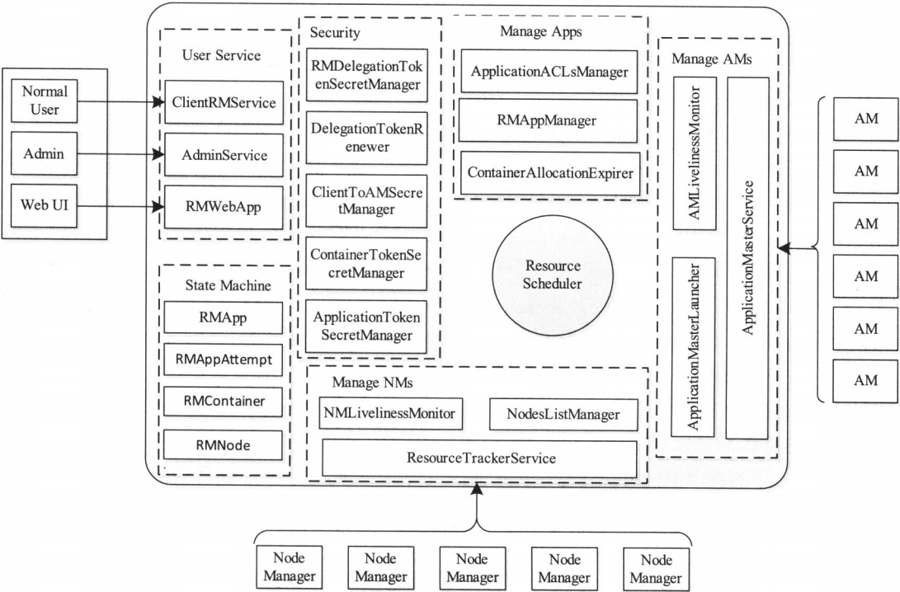

YARN也采用了Master/Slave结构，其中，Master实现为ResourceManager，负责整个集群资源的管理与调度；Slave实现为NodeManager，负责单个节点的资源管理与任务启动ResourceManager是整个YARN集群中最重要的组件之一，它的设计直接决定了系统的可扩展性、可用性和容错性等特点，它的功能较多，包括ApplicationMaster管理（启动、停止等）、NodeManager管理、Application管理、状态机管理等
ResourceManager负责集群中所有资源的统一管理和分配，它接收来自各个节点的资源汇报信息，并把这些信息按照一定的策略分配给各个应用程序
ResourceManager基本职能
ResourceManager需通过两个RPC协议与NodeManager和AppMaster交互,具体如下 :
- ResourceTracker : NodeManager通过该RPC协议向ResourceManager注册、汇报节点健康状况和Container运行状态，并领取ResourceManager下达的命令，这些命令包括重新初始化、清理Container等，在该RPC协议中，ResourceManager扮演RPCServer的角色，而NodeManager扮演RPCClient的角色，换句话说，NodeManager与ResourceManager之间采用了“pull模型”,NodeManager总是周期性地主动向ResourceManager发起请求,并通过领取下达给自己的命令
- ApplicationMasterProtocol ：应用程序的ApplicationMaster通过该RPC协议向ResourceManager注册、申请资源和释放资源。在该协议中，ApplicationMaster扮演RPC Client的角色，而ResourceManager扮演RPC Server的角色，换句话说，ResourceManager与ApplicationMaster之间采用了“pull模型”
- ApplicationClientProtocol ：应用程序的客户端通过该RPC协议向ResouceManager提交应用程序、查询应用程序状态和控制应用程序等。在该协议中，应用程序客户端扮演RPC Client的角色，而ResourceManager扮演RPC Server的角色
ResourceManager主要完成以下几个功能 ：
- 与客户端交互，处理来自客户端的请求
- 启动和管理AppicationMaster，并在它运行失败时重新启动它
- 管理NodeManager，接收来自NodeManager的资源汇报信息，并向NodeManager下达管理指令
- 资源管理与调度，接收来自AppMaster的资源申请请求，并为之分配资源
ResouceManager内部架构
ResourceManager主要由以下几个部分组成 ：
- 用户交互模块。ResourceManager分别针对普通用户、管理员和Web提供了三种对外服务，具体实现分别对应ClientRMService、AdminService和WebApp
- ClientRMService。ClientRMService是为普通用户提供的服务，它处理来自客户端各种RPC请求，比如提交应用程序、终止应用程序、获取应用程序运行状态等
- AdminService。ResourceManager为管理员提供了一套独立的服务接口，以防止大量的普通用户请求使管理员发送的管理命令饿死，管理员可通过这些接口管理集群，比如动态更新节点列表、更新ACL列表、更新队列信息等
- WebApp。为了更加友好地展示集群资源使用情况和应用程序运行状态等信息，YARN对外提供了一个WEB界面，这一部分是YARN仿照Haml开发的一个轻量级嵌入式Web框架
- NM管理模块。*该模块主要涉及以下组件 ：*
- NMLivelinessMonitor。监控NM是否活着，如果一个NodeManager在一定时间内未汇报心跳信息，则认为它死掉了，需将其从集群中移除
- NodesListManager。维护正常节点和异常节点列表，管理exclude(类似于黑名单)和include(类似于白名单)节点列表，这两个列表均是在配置文件中设置的，可以动态加载
- ResourceTrackerService。处理来自NodeManager的请求，主要包括注册和心跳两种请求，其中，注册时NodeManager启动时发生的行为，请求包中包含节点ID、可用的资源上限等信息；而心跳时周期性行为，包含各个Container运行状态，运行的Application列表、节点资源状况等信息，作为请求的应答，ResourceTrackerService可为NodeManager返回待释放的Container列表、Application列表等信息
- AM管理模块。*该模块主要涉及以下组件 ：*
- AMLivelinessMonitor。监控AM是否活着，如果一个ApplicationMaster在一定时间内未汇报心跳信息，则认为它死掉了，它上面所有正在运行的Container将被置为失败状态，而AM本身会被重新分配到另外一个节点上执行
- ApplicationMasterLauncher。与某个NodeManager通信，要求它为某个应用程序启动ApplicationMaster
- ApplicationMasterService。处理来自ApplicationMaster的请求，主要包括注册和心跳两种请求，其中，注册是ApplicationMaster启动时发生的行为，注册请求包中包含ApplicationMaster启动节点；对外RPC端口号和trackingURL等信息；而心跳而是周期性行为，汇报信息包含所需资源描述、待释放的Container列表、黑名单列表等，而AMS则为之返回新分配的Container、失败的Container、待抢占的Container列表等信息
- Application管理模块。*该模块主要涉及以下组件 ：*
- ApplicationACLsManager。管理应用程序访问权限，包含两部分权限 ：查看权限和修改权限。查看权限主要用于查看应用程序基本信息，而修改权限则主要用于修改应用程序优先级、杀死应用程序等
- RMAppManager。管理应用程序的启动和关闭
- ContainerAllocationExpirer。当AM收到RM新分配的一个Container后，必须在一定的时间内在对应的NM上启动该Container，否则RM将强制回收该Container，而一个已经分配的Container是否该被回收则是由ContainerAllocationExpirer决定和执行的
- 状态机管理模块。ResourceManager使用有限状态机维护有状态对象的生命周期，状态机的引入使得YARN设计架构更加清晰。ResourceManager共维护了四类状态机，分别是RMApp、RMAppAttempt、RMContainer和RMNode
- RMApp。RMApp维护了一个应用程序的整个运行周期，包括从启动到运行结束整个过程。由于一个Application的生命周期可能会启动多个Application运行实例，因此可认为，RMApp维护的是同一个Application启动的所有运行实例的生命周期
- RMAppAttempt。一个应用程序可能启动多个实例，即一个实例运行失败后，可能再次启动一个重新运行，而每次启动称为一个运行尝试，用“RMAppAttempt”描述，RMAppAttempt维护了一次运行尝试的整个生命周期
- RMContainer。RMContainer维护了一个Container的运行周期，包括从创建到运行结束整个过程。RM将资源封装成Container发送给应用程序的ApplicationMaster，而ApplicationMaster则会在Container描述的运行环境中启动任务，因此，从这个层面上讲，Container和任务的生命周期是一致的
- RMNode。RMNode维护了一个NodeManager的生命周期，包括启动到运行结束整个过程
- 安全管理模块。ResourceManager自带了非常全面的权限管理机制，主要由ClientTOAMSecretManager、ContainerTokenSecretManager、ApplicationTokenSecretManager等模块完成
- 资源分配模块。该模块主要涉及一个组件 – ResourceScheduler。ResourceScheduler是资源调度器，它按照一定的约束条件将集群中的资源分配给各个应用程序，当前主要考虑内存和CPU资源。ResourceScheduler是一个插拔式模块，YARN自带了一个批处理资源调度器 – FIFO和两个多用户调度器 – Fair Scheduler和Capacity Scheduler
ResouceManager内部架构图
